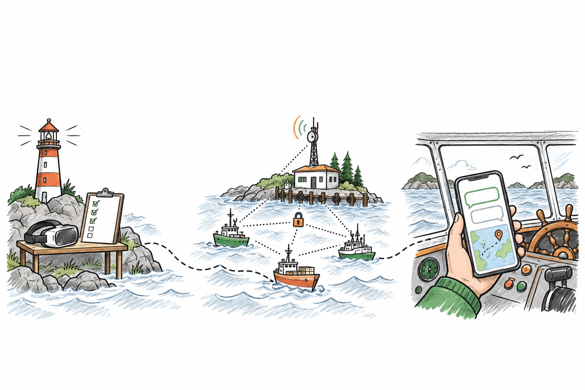

A moment of silence.
Designing and building at the intersection of language, systems, and interaction.
RESEARCH → STANDARD → PRODUCT
↓ NO-FIRE FIELDDesigning and building at the intersection of language, systems, and interaction.
RESEARCH → STANDARD → PRODUCTMostly solo, always from scratch.
Designing and building at the intersection of language, systems, and interaction.
RESEARCH → STANDARD → PRODUCTSmall experiments. New perspectives. Open possibilities.
Designing and building at the intersection of language, systems, and interaction.
RESEARCH → STANDARD → PRODUCTA collection of things made, learned, and shared.